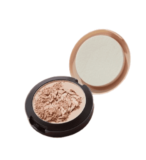
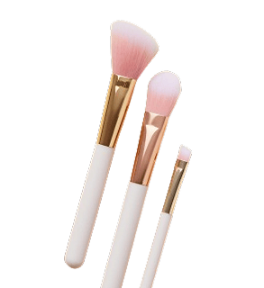
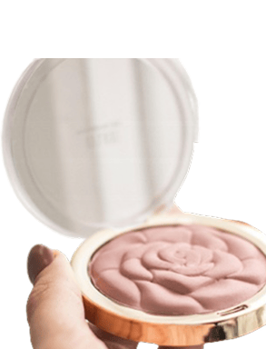
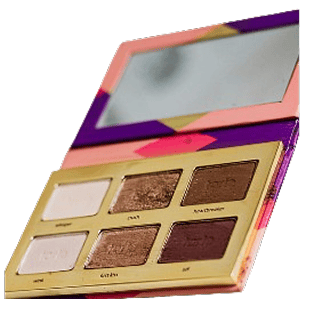
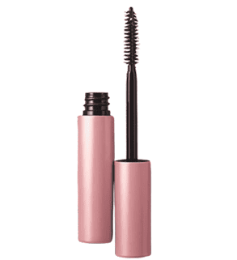
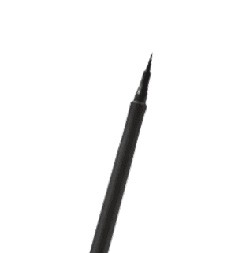

Staying updated with beauty trends allows you to refine your
techniques, discover new styles, and adapt looks that best enhance
your features. Rather than following trends for the sake of change,
understanding them helps you choose what works for you while keeping
your beauty routine fresh and relevant. Below are some of the most
refined beauty trends and styling tips, curated by GY’Oreal.
A Blush Renaissance

As highlighted by Vogue, the rise of the “blush renaissance” marks
a renewed appreciation for flushed, radiant cheeks that bring
warmth and dimension back to the face. Rather than serving as a
subtle finishing touch, blush is now taking center stage—soft,
diffused, and intentionally visible. To recreate this look, start
with a well-blended base. Use a lightweight foundation and apply
it in thin, buildable layers, blending from the center of the face
outward for a seamless, skin-like finish. Taking time to blend
properly—especially around the jawline and hairline.
For the signature blush renaissance effect, apply a rose-toned
blush across the cheeks and softly blend it upward toward the
temples. This technique lifts the face and creates a youthful,
radiant glow. The key is to keep the edges diffused, allowing the
color to melt naturally into the skin.
Styling Tips
- Let the Blush Be the Focus
Keep the rest of your makeup soft and minimal. Since blush is
the highlight, avoid overly bold eyes or heavy contouring to
maintain balance.
- Pair with Natural Base Makeup
Use a lightweight, skin-like foundation with a subtle glow.
This enhances the flushed effect and keeps the look fresh
rather than heavy.
- Keep Eye Makeup Soft and Defined
Neutral eyeshadows, light eyeliner, and lengthening mascara
help enhance the eyes without drawing attention away from the
blush.
Recommended For You

Powder Foundation

Makeup Brush Set

Rose Blush On
The Smoky Eye

The smoky eye trend remains a timeless choice for creating depth
and intensity in any look. To achieve a modern smoky eye, start
with neutral or deep-toned eyeshadows and blend gradually to
create a soft, diffused effect rather than harsh lines. Focus on
seamless blending, especially along the outer corners and lower
lash line, to enhance dimension while maintaining elegance. Pair
the look with a balanced base and subtle lips to keep the overall
appearance refined and sophisticated.
Styling Tips
- Keep the Lips Soft and Neutral
Pair smoky eyes with nude, rose, or muted lip colors. This
keeps the focus on the eyes while maintaining a polished and
sophisticated look.
- Balance with a Clean, Even Base
Use a smooth, well-blended foundation with light contour and
subtle blush. A clean complexion enhances the intensity of the
smoky eye without making the overall look feel heavy.
- Choose the Right Outfit and Tones
Smoky eyes pair best with darker or neutral outfits such as
black, beige, or deep tones. This creates a cohesive and
refined appearance, especially for evening or formal
occasions.
Recommended For You

Natural Color Eye Palette

Waterproof Mascara

Eyeliner Pencil